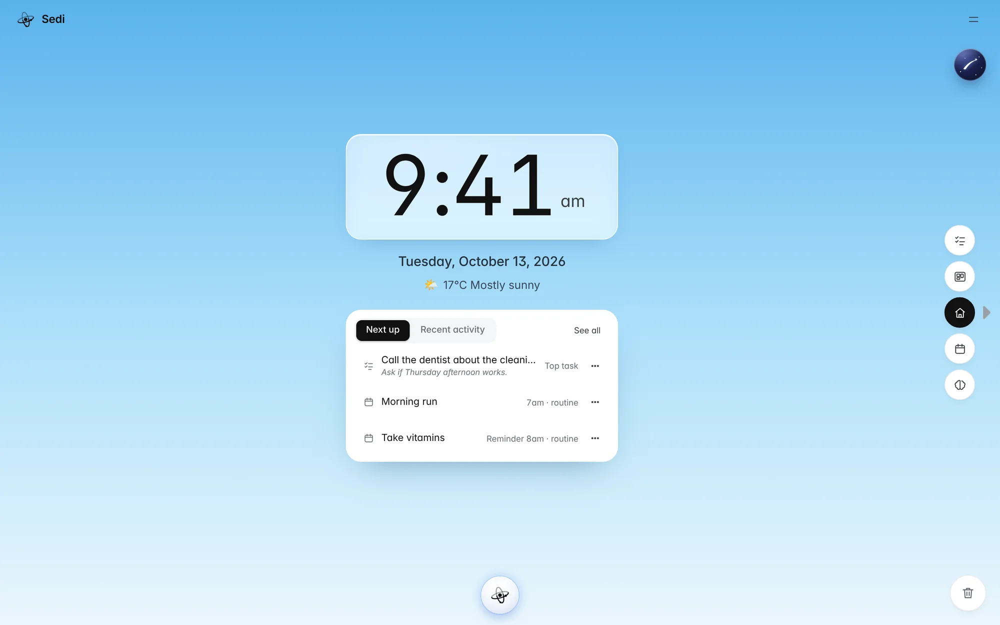

Sedi
$0free, forever
- Taskly, Boardly, Timely and Brainly
- Universal Board, assistant and voice
- Sovereign Brain, on your device
- Works offline, exports everything
- No account, no email, no card
Sedi brings your tasks, goals, calendar and notes into one calm workspace that runs in your browser. No sign-up, no subscription, and nothing leaves your computer.

Order and arrangement: putting things in a meaningful sequence, each one in its proper place.
To sit, to settle, to establish a position. The root of words like seat and session.
Sedi is both. First your life gets some order. Then you have somewhere to sit with it and see what matters, what you’re working toward and what needs you today.
Your health affects your work. Your goals shape your habits. Your values drive your decisions. Life doesn’t come in separate categories, so the tools for it shouldn’t either.
Before you optimize your life, organize it.
Sedi is built to maximize alignment between what you value and what you actually do. It’s the simplest system we could make that still helps you act on what matters, every day.
Every task, goal, event, note and link is the same kind of card. Drag one from a tool to another and it becomes what that tool needs.
Your morning view: the time, the weather and the three things that come next. Nothing else competes for your attention.
Next up pulls the top task and today’s events from every tool.
Drop any card on the board in the top corner and it becomes plain text. Drag it out in another tool and it takes that tool’s shape: a goal becomes a task, a note becomes an event.
Press ⌘ K to ask about your week, or say “move call the dentist to Boardly.” Every change asks before it happens and is written to a permanent log.
Drag a card to the trash and hear it go, with Undo if you change your mind. Finished one-off events archive themselves after 30 days.
Every screen does one job. Empty space is part of the design, and nothing is added just because it could be.
Taskly’s columns don’t scroll and Boardly stops at ten boards. When something fills up, you decide what matters instead of piling it up.
Click a link and you’re in. No account, no email, no card, and no countdown to a trial ending.
Everything is stored in your browser on your own computer. Download all of it as a file whenever you like.
The desk is where focused work happens. Sedi is designed for a real screen and a quiet hour, not for notifications.
Sedi is made by one person who runs his own life in it every day. Every feature started as something he needed.
Sedi runs entirely in your browser and keeps working with no connection after your first visit. Your cards live in your computer’s storage, not on someone else’s server.
When you’re stuck, ask. Sovereign Brain answers from a library of habit, focus and communication frameworks using a small AI model that runs inside your browser. What you tell it never leaves your device.
The whole workspace is free for as long as you use it. Lifetime Membership adds the pieces that need a cloud, for one payment.
Membership opens inside Sedi. Early members keep the $39 price, and get each feature above as it ships.
Most tools charge $10 a month or $80 a year, in a loop that’s easy to forget to cancel. Sedi is an old-fashioned handshake instead: you pay once, you keep it, and that money pays for the next thing to be built.
Thank you for being here.
I built Sedi because I needed it. I run my own days in it, and every part of it started as something I wished existed.
Because everything runs on your computer, the core workspace is yours to use free, forever. If it becomes a home for your routines and you want to support its independent development, there’s a single Lifetime Membership. I chose one payment because I’m tired of the subscription economy: you pay about the cost of a few pizzas once, you own it, and I get the resources to keep building.
I’m grateful either way. Knowing that something I made with my own hands is useful to you is more than enough.
Behind Sedi is one question: how do people build a life that fits who they are and what they value? Each layer below answers part of it, built one at a time and in this order.
What am I trying to do?
Goals, priorities, time and knowledge, organized in one place.
Here nowHow do I keep the capacity to do it?
One place to understand your own health, alongside the people who care for it.
LaterHow does this become part of my day?
A display in your kitchen or office, so your plan is simply there.
LaterWhere do people who live this way meet?
A physical place for intentional living, built on everything before it.
LaterYes. The full workspace is free with no time limit and no credit card. Lifetime Membership is for people who want sync, backups and integrations.
In your browser’s storage, on your own computer. Nothing is sent to a server. Menu → Download data saves everything as a file, and Import data brings it back.
No. Open the link and start. An account only comes into it for Lifetime features like sync between computers.
Yes. After your first visit, Sedi opens and runs with no connection. Weather and AI providers you connect yourself are the only parts that need the internet.
It opens on a phone, but it’s designed for a desktop or laptop, where focused work happens. On your phone, copy the link and open it at your desk.
The assistant searches and summarizes your own cards, and can create or move them after you confirm. Sovereign Brain is an optional coach that runs on your computer. You can also connect your own AI provider in settings.
Your copy keeps running in your browser, and your data downloads as a plain file you can keep. You’re never locked in.
Limits make you choose. When a column is full, you finish, move or delete something instead of letting a list grow forever.
Open Sedi in your browser. One click, no sign-up.
Open Sedi, free